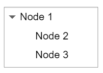
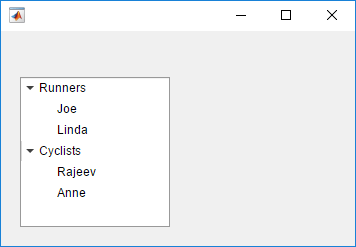
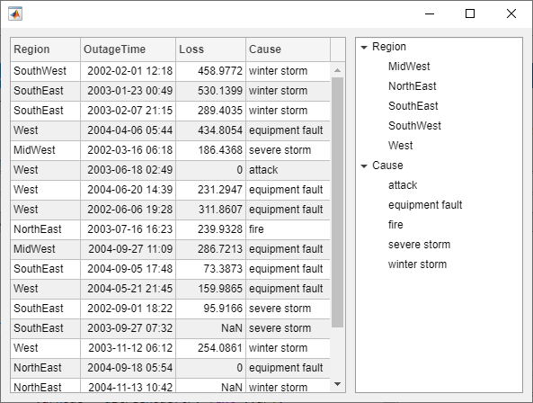

TreeNode
Tree node UI component
- 
Description
A tree node UI component displays an item in a tree hierarchy within an app. Use
the TreeNode object to modify the appearance and behavior of a tree node
after you create it.
Creation
Create a tree node in an app using the uitreenode
function.
Properties
Examples
Create an app that displays athlete names grouped by sport. When the app user clicks on a name, MATLAB displays data about the athlete.
Create a program file called mytreeapp.m that contains the following commands to create a tree, a set of nested tree nodes, and a callback function for the tree. The SelectionChangedFcn property specifies the function to execute when the user clicks a node in the tree.
function mytreeapp fig = uifigure; t = uitree(fig,"Position",[20 20 150 150]); % Assign callback in response to node selection t.SelectionChangedFcn = @nodechange; % First level nodes category1 = uitreenode(t,"Text","Runners","NodeData",[]); category2 = uitreenode(t,"Text","Cyclists","NodeData",[]); % Second level nodes. % Node data is age (y), height (m), weight (kg) p1 = uitreenode(category1,"Text","Joe","NodeData",[40 1.67 58] ); p2 = uitreenode(category1,"Text","Linda","NodeData",[49 1.83 90]); p3 = uitreenode(category2,"Text","Rajeev","NodeData",[25 1.47 53]); p4 = uitreenode(category2,"Text","Anne","NodeData",[88 1.92 100]); % Expand the tree expand(t); % Create the function for the SelectionChangedFcn callback % When the function is executed, it displays the data of the selected item function nodechange(src,event) node = event.SelectedNodes; display(node.NodeData); end end
When the user runs mytreeapp and clicks a node in the tree, MATLAB displays the NodeData for that node.

Create a tree that populates nodes based on the data in a table.
Create a figure with a grid layout manager to hold the UI components. Load sample data on electric utility outages and create a table UI component to display the data. Then, create a tree to hold nodes listing the regions and causes of the outages.
fig = uifigure;
gl = uigridlayout(fig,[1 2]);
gl.ColumnWidth = {'2x','1x'};
T = readtable("outages.csv");
T = T(1:20,["Region","OutageTime","Loss","Cause"]);
tbl = uitable(gl,"Data",T);
tr = uitree(gl);Specify the table variables to display in the tree. For each of those variables, create
a top-level node whose text is the variable name. Extract the relevant data by converting
the table entries for the variable to a categorical array and returning the list of
categories as names. Then, loop through the categories. For each element,
add a node to the tree under the appropriate parent node.
vars = ["Region","Cause"]; for k1 = 1:length(vars) var = vars{k1}; varnode = uitreenode(tr,"Text",var); rows = T{:,var}; names = categories(categorical(rows)); for k2 = 1:length(names) text = names{k2}; uitreenode(varnode,"Text",text); end end
Expand the tree to see all the nodes.
expand(tr)

Create a context menu for a tree component. Assign the context menu to all of the top-level nodes in the tree.
In a new script in your current folder, create a UI figure. Then, create a tree with four top-level nodes and a set of nested nodes.
fig = uifigure; t = uitree(fig,"Position",[20 200 175 100]); category1 = uitreenode(t,"Text","Runners"); r1 = uitreenode(category1,"Text","Joe"); r2 = uitreenode(category1,"Text","Linda"); category2 = uitreenode(t,"Text","Cyclists"); c1 = uitreenode(category2,"Text","Rajeev"); category3 = uitreenode(t,"Text","Hikers"); h1 = uitreenode(category3,"Text","Jack"); category4 = uitreenode(t,"Text","Swimmers"); s1 = uitreenode(category4,"Text","Logan");

Create a context menu with one menu item and two submenus that users can click to
expand a single tree node or all of the tree nodes. For each submenu, specify a
MenuSelectedFcn callback function to execute when a user selects
the menu option. Pass the relevant app object as input to each function to access app
data from within the callback function.
cm = uicontextmenu(fig); m1 = uimenu(cm,"Text","Expand..."); sbm1 = uimenu(m1,"Text","This Node", ... "MenuSelectedFcn",{@expandSingle,fig}); sbm2 = uimenu(m1,"Text","All Nodes", ... "MenuSelectedFcn",{@expandAll,t});
Assign the context menu to the top-level tree nodes by setting the
ContextMenu property of each node to the
ContextMenu object.
category1.ContextMenu = cm; category2.ContextMenu = cm; category3.ContextMenu = cm; category4.ContextMenu = cm;
At the bottom of the file, define the expandSingle and
expandAll callback functions. Define the functions to accept the
source and event data that MATLAB passes to all callback functions.
Define the expandSingle function to also accept the UI figure
object containing the tree, and use the CurrentObject property of
the figure to determine which tree node was clicked to bring up the context menu. Then,
expand that node.
Define the expandAll function to also accept the tree object, and
expand all of the nodes in the tree.
function expandSingle(src,event,f) node = f.CurrentObject; expand(node) end function expandAll(src,event,t) expand(t) end
Save and run the script. Right-click any of the top-level tree nodes to view the context menu.

Version History
Introduced in R2017b